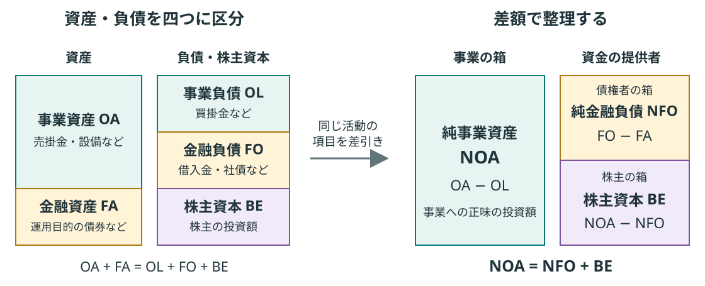
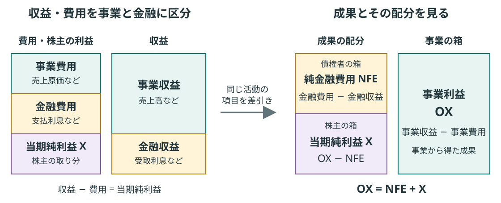
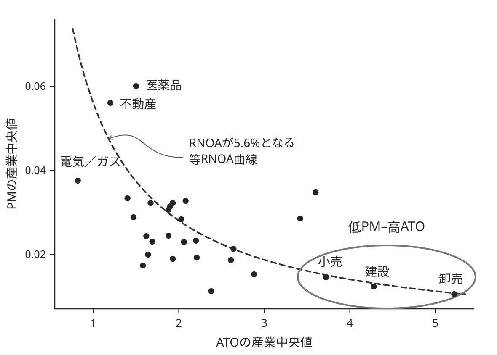
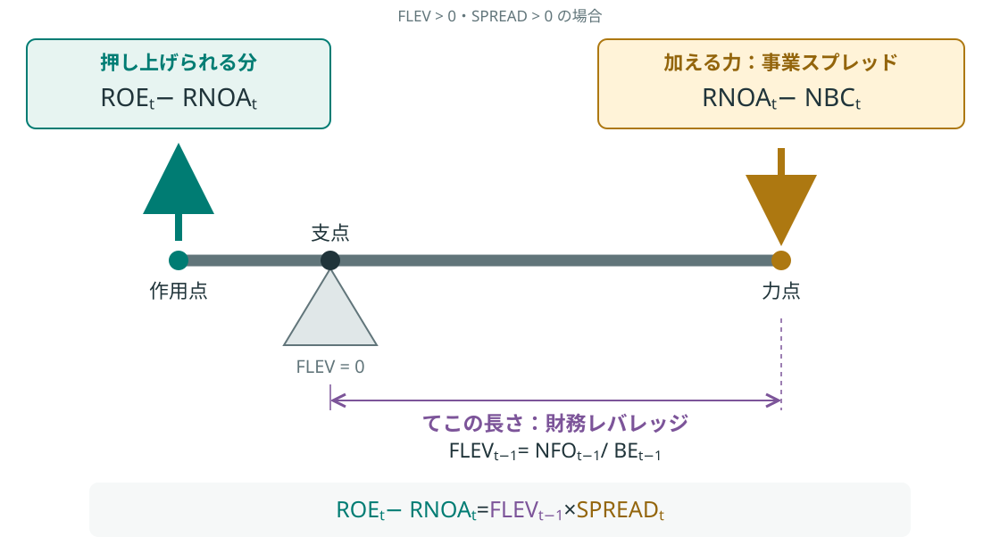
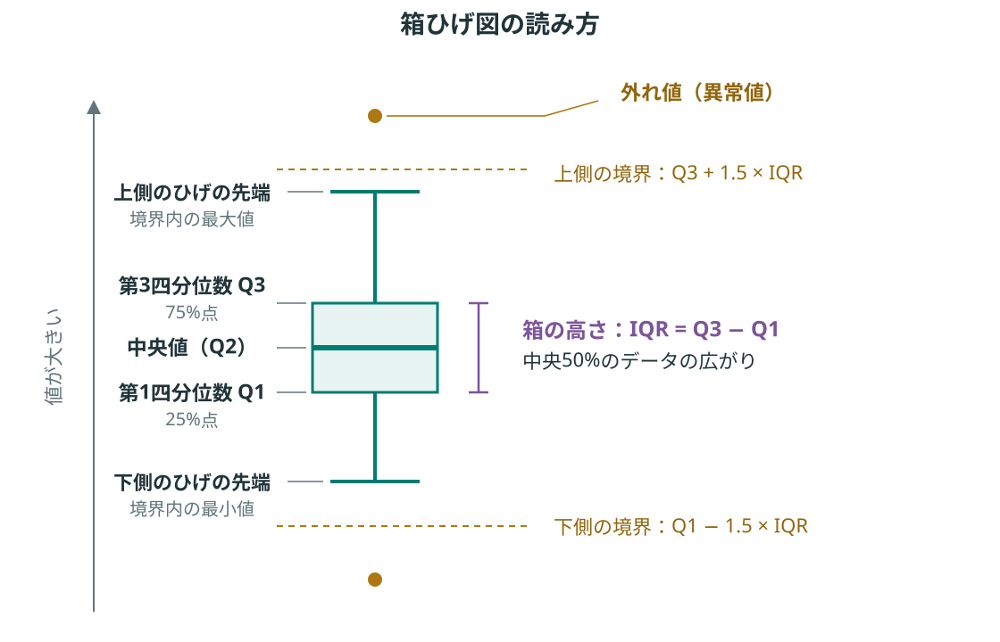
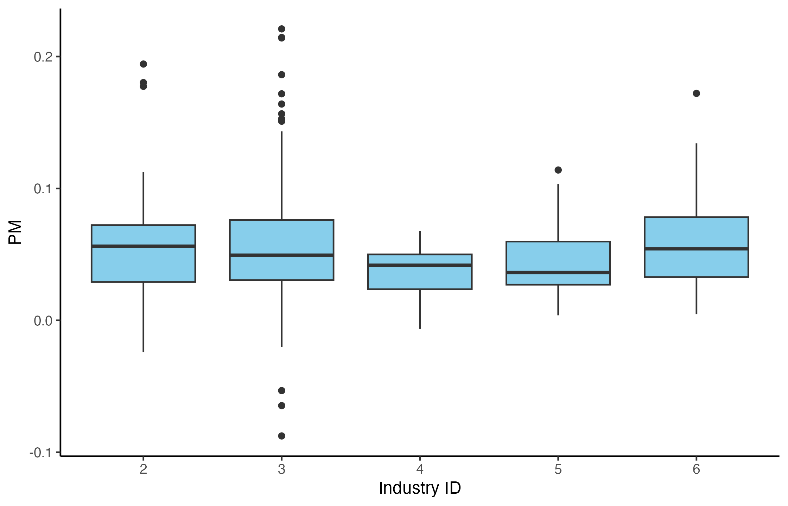
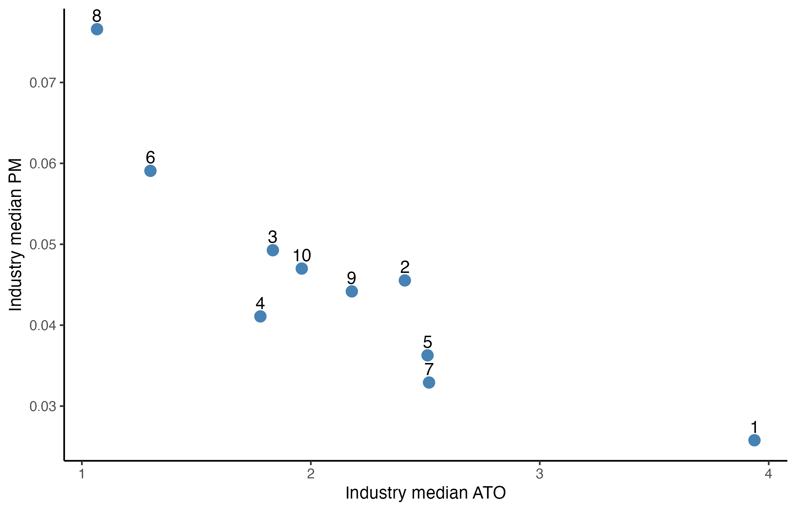
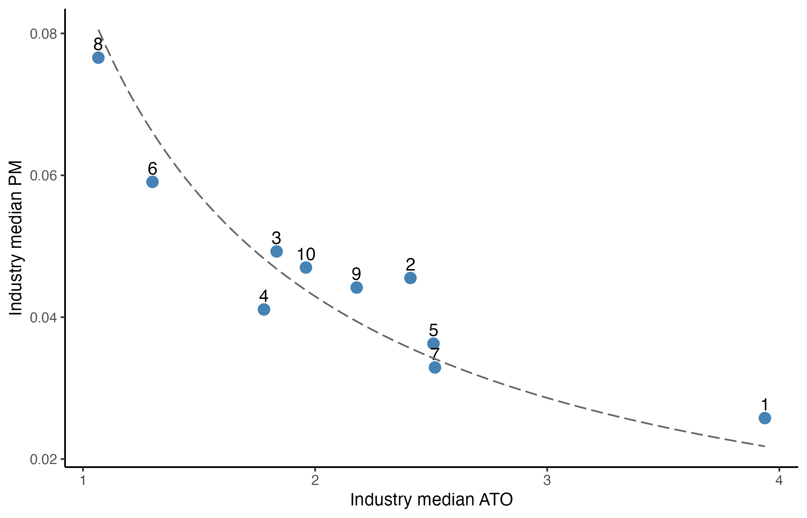

library(tidyverse)第10回：財務データ分析 III
到達目標
- 会計上のリターン（RNOA・NBC・ROE）の意味を説明できる。
- RNOAの決定要因を説明できる。
- デュポン・モデルを用いて、ROEの決定要因を説明できる。
- Rを用いて各指標を計算し、リターンの分解・分析を行える。
作業の準備
empirical_finance.Rprojを開く。- File → New File → R ScriptからRスクリプトを新規作成し、
script/lesson10.Rとして保存する。すでに作成している場合は、そのファイルを開く。 - 第7回のdata_lesson07.csvをProject内の
dataフォルダに用意する。保存済みのファイルはそのまま使う。結果の保存先となるoutputフォルダも確認する。
tidyverseは、新しいRセッションごとに読み込む。
第7・8回で作成した、全年度を含むfinancial_dataがEnvironmentに残っている場合は、以下のデータの読込みと型の変換を省略できる。新しいRセッションでfinancial_dataがない場合は、以下のコードを実行する。
financial_data <- read_csv(
"data/data_lesson07.csv",
na = c("", "NA"),
show_col_types = FALSE
) |>
mutate(
firm_ID = as.factor(firm_ID),
industry_ID = as.factor(industry_ID)
)Chapter 1｜会計上のリターンの決定要因
会計上のリターンは、投じた資金に対してどれだけの成果が得られたかを示す。同じ水準のリターンであっても、その背景にある事業の仕組みや負債の活用状況は企業によって異なる。本章では、投資と成果の関係を整理し、リターンの決定要因を通じて、企業のビジネス・モデルや経営上の特徴を読み解く。
1. 事業活動と金融活動とを区別したB/SとP/L
貸借対照表（B/S）は、ある時点で企業が保有する資産と、それを支える負債・株主資本を示す。資産を見ると資金が何に使われているか、負債・株主資本を見るとその資金がどこから調達されたかがわかる。
損益計算書（P/L）は、1年間などの一定期間に生じた収益と費用、その差額である利益を示す。B/Sがある時点の資金の状態を表すのに対し、P/Lはその資金を使って一定期間にどれだけの利益を得たかを表す。
商品・サービスの生産や販売に関わる活動を事業活動、資金の調達や余剰資金の運用に関わる活動を金融活動という。B/SとP/Lの各項目を、この二つに分ける。
この区分に基づき、同じ活動に属する資産と負債、収益と費用をそれぞれ差し引いて整理したものが、組替B/Sと組替P/Lである。これによって、事業に投じられた資金とその成果を、債権者・株主に対応させて捉えられる。
組替B/S：債権者と株主の投資を区別する
下の図では、事業資産から事業負債を差し引いた金額を、純事業資産（NOA）という。これは、事業への正味の投資額を表す。組替B/Sでは、この投資を支える債権者からの投資と株主からの投資を区別する。債権者からの投資に対応するのが、金融負債から金融資産を差し引いた純金融負債（NFO）であり、債権者からの正味の調達額を表す。

事業への正味の投資額NOAから、債権者の投資に対応するNFOを差し引いた残りが、株主資本（BE）となる。BEは、株主の投資額を帳簿上で表したものである。
\[ \begin{aligned} \text{株主資本}\,{\scriptstyle(BE_t)} &= \underbrace{\bigl(\text{事業資産}\,{\scriptstyle(OA_t)}-\text{事業負債}\,{\scriptstyle(OL_t)}\bigr)}_{\textcolor{red}{\text{純事業資産}\,{\scriptscriptstyle(NOA_t)}}} \\[1em] &\quad - \underbrace{\bigl(\text{金融負債}\,{\scriptstyle(FO_t)}-\text{金融資産}\,{\scriptstyle(FA_t)}\bigr)}_{\textcolor{red}{\text{純金融負債}\,{\scriptscriptstyle(NFO_t)}}} \end{aligned} \]
組替P/L：債権者と株主に対応する成果を区別する
下の図では、事業収益から事業費用を差し引いた事業利益（OX）が、事業に投じた資金から1年間に得られた成果を表す。組替P/Lでは、この成果を、債権者の投資に対応する成果と株主の投資に対応する成果に分けて見る。金融費用から金融収益を差し引いた純金融費用（NFE）は、債権者の側から見れば、リスクを負って企業に資金を提供したことへの対価に対応する。企業の側から見れば、負債による資金調達の正味のコストを表す。

事業の成果OXから、債権者に対応する成果NFEを差し引いた残りが、株主に帰属する当期純利益（X）となる。
\[ \text{当期純利益}\,{\scriptstyle(X_t)} = \text{事業利益}\,{\scriptstyle(OX_t)} - \text{純金融費用}\,{\scriptstyle(NFE_t)} \]
2. 投資と成果を対応させ、リターンを求める
組替B/Sと組替P/Lを使うと、事業・債権者・株主それぞれの投資額と、それに対応する1年間の成果を組み合わせられる。成果を投資額で割れば、「投じた金額に対して、どれだけのリターンが得られたか」を表せる。
会計上の事業のリターン
事業への正味の投資額NOAに対応する成果は、事業利益OXである。OXを期首のNOAで割ると、事業に投じた資金がどれだけの利益を生んだかを示す純事業資産利益率（RNOA）が得られる。
\[ RNOA_t = \frac{OX_t}{NOA_{t-1}} \]
会計上の債権者のリターン
債権者の投資に対応するNFO（正味の調達額）には、その成果として純金融費用NFEを対応させる。NFEを期首のNFOで割ると、債権者に対応するリターンを企業側の資金調達コストとして捉えた純金融費用率（NBC）が得られる。
\[ NBC_t = \frac{NFE_t}{NFO_{t-1}} \]
会計上の株主のリターン
株主の投資額を表すBEに対応する成果は、株主に帰属する利益Xである。Xを期首のBEで割ると、株主の投資に対してどれだけの利益が生じたかを示す株主資本利益率（ROE）が得られる。
\[ ROE_t = \frac{X_t}{BE_{t-1}} \]
次に、まず事業のリターンRNOAが何によって決まるかを調べる。
3. 事業のリターンの決定要因
事業のリターンであるRNOAは、企業が事業で稼ぐ力を反映している。収益性の高い事業やプロジェクトに投資し、投じた資金を有効に活用することで、投資額（純事業資産）に対して多くの成果（事業利益）を生み出す企業ほど、RNOAは高くなる。
この稼ぐ力を決める要因を調べるために、RNOAの式を次のように分解する。売上高を\(Sales\)とする。
\[ RNOA_t = \frac{OX_t}{NOA_{t-1}} = \underbrace{\frac{OX_t}{Sales_t}}_{PM_t} \times \underbrace{\frac{Sales_t}{NOA_{t-1}}}_{ATO_t} \]
この式は、RNOAが売上高事業利益率（PM）と純事業資産回転率（ATO）の積で表せることを示している。
PM（売上高事業利益率）は、売上高に対する事業利益の割合であり、売上高1円からどれだけ事業利益が残るかを表す。金融活動の損益を切り分けた事業の収益性を示す指標である。販売価格や仕入・人件費などの費用が影響する。
ATO（純事業資産回転率）は、期首純事業資産の何倍の売上高を1年間で生み出したかを表す。在庫や設備など、事業に投じた資金を売上高につなげる事業資産の利用効率を示す指標である。同じ純事業資産から多くの売上高を生むほど高くなる。
つまり、RNOAは、事業の収益性（PM）と、事業資産の利用効率（ATO）の組合せによって決まる。
下の図は、産業ごとのPMとATOの組合せを示したものである。横軸はATOの産業中央値、縦軸はPMの産業中央値を表す。

図の左上にある医薬品・不動産は高PM・低ATO、右下にある小売・建設・卸売は低PM・高ATOに位置する。前者は売上高に対して多くの利益を残す一方、後者は事業への投資額に対して多くの売上高を生み出すという特徴が読み取れる。
破線は、\(RNOA=5.6\%\)となるPMとATOの組合せを示す等RNOA曲線（\(PM=0.056/ATO\)）である。同じRNOAであっても、それを実現する利益率と回転率の組合せは異なる。
このように、RNOAを決定づけるPMとATOを合わせて見ることで、ある産業や企業がどのように利益を生み出しているかという、ビジネス・モデルの一端をつかむことができる。
4. 株主のリターンの決定要因（1）
株主のリターンであるROEは、企業がどれだけ利益を生み出すかに加え、資産をどのような資金で支えているかによっても変わる。その要因を調べるために、ROEの式を次のように分解する。
\[ \begin{aligned} \text{株主資本利益率}\,{\scriptstyle(ROE_t)} &= \frac{\text{当期純利益}\,{\scriptstyle(X_t)}}{\text{期首株主資本}\,{\scriptstyle(BE_{t-1})}} \\[1em] &= \underbrace{\frac{\text{当期純利益}\,{\scriptstyle(X_t)}}{\text{売上高}\,{\scriptstyle(Sales_t)}}}_{\text{売上高純利益率}} \times \underbrace{\frac{\text{売上高}\,{\scriptstyle(Sales_t)}}{\text{期首総資産}\,{\scriptstyle(TA_{t-1})}}}_{\text{総資産回転率}} \\[1em] &\quad\times \underbrace{\frac{\text{期首総資産}\,{\scriptstyle(TA_{t-1})}}{\text{期首株主資本}\,{\scriptstyle(BE_{t-1})}}}_{\text{総レバレッジ}} \end{aligned} \]
この式は、ROEが売上高純利益率・総資産回転率・総レバレッジの積で表せることを示している。この分解を基本デュポン・モデルという。
売上高純利益率は、売上高に対する当期純利益の割合であり、売上高1円からどれだけ最終的な利益が残るかを表す。金融活動の損益や税金も反映した企業全体の収益性を示す指標である。
総資産回転率は、期首総資産の何倍の売上高を1年間で生み出したかを表す。金融資産も含む資産を売上高につなげる資産全体の利用効率を示す指標である。同じ総資産から多くの売上高を生むほど高くなる。
総レバレッジは、期首株主資本の何倍の総資産を保有しているかを表す。株主資本に対してどれだけ負債を活用して資産を保有しているかという、負債の活用状況を示す指標である。数値が高いほど株主資本に対する負債の利用が大きく、返済や利払いの負担を通じて、財務の安全性を考える手がかりとなる。
つまり、ROEは、企業全体の収益性・資産の利用効率・負債の活用状況の組合せによって決まる。
下の表は、2014年公表資料に基づき、日米欧の企業のROEと、それを構成する三つの指標を比較したものである。
| 地域・対象企業 | 区分 | ROE（%） | 売上高純利益率（%） | 総資産回転率（回） | 総レバレッジ（倍） |
|---|---|---|---|---|---|
| 日本（TOPIX500） | 製造業 | 4.6 | 3.7 | 0.92 | 2.32 |
| 日本（TOPIX500） | 非製造業 | 6.3 | 4.0 | 1.01 | 2.80 |
| 日本（TOPIX500） | 合計 | 5.3 | 3.8 | 0.96 | 2.51 |
| 米国（S&P500） | 製造業 | 28.9 | 11.6 | 0.86 | 2.47 |
| 米国（S&P500） | 非製造業 | 17.6 | 9.7 | 1.03 | 2.88 |
| 米国（S&P500） | 合計 | 22.6 | 10.5 | 0.96 | 2.69 |
| 欧州（BE500） | 製造業 | 15.2 | 9.2 | 0.80 | 2.58 |
| 欧州（BE500） | 非製造業 | 14.8 | 8.6 | 0.93 | 3.08 |
| 欧州（BE500） | 合計 | 15.0 | 8.9 | 0.87 | 2.86 |
合計を見ると、日本のROEは5.3%であり、米国の22.6%、欧州の15.0%を下回る。総資産回転率は日本0.96回、米国0.96回、欧州0.87回であり、総レバレッジにも大きな差はない。一方、売上高純利益率は日本3.8%に対し、米国10.5%、欧州8.9%と差が大きい。この表からは、日本企業の低いROEを考えるうえで、売上高純利益率の低さが重要な要因であると読み取れる。
このように、ROEを構成する三つの指標を合わせて見ることで、企業間のROEの違いがどこから生じているかを捉えられる。利益を残す力、資産の使い方、負債の利用状況を区別して見ることは、企業の経営上の特徴や課題を理解する手がかりとなる。
5. 株主のリターンの決定要因（2）
前節では、ROEの高低を決める三つの要素を学んだ。基本モデルの式だけを見ると、負債の活用度を表す総レバレッジを高めればROEも高くなるように見えるため、違和感を覚えるかもしれない。ここでは、レバレッジの持つ意味と、事業活動・金融活動がROEにどう関わるかを整理する。
そのために、組替B/Sと組替P/Lの関係を使い、ROEの式を次のように変形する。補足：上級デュポン・モデルの導出
組替P/Lの\(X_t=OX_t-NFE_t\)をROEの定義式に代入し、事業利益と純金融費用を分ける。それぞれに期首のNOA、NFOを掛けて割ると、RNOAとNBCを使って表せる。
\[ \begin{aligned} ROE_t &= \frac{X_t}{BE_{t-1}} = \frac{OX_t-NFE_t}{BE_{t-1}} \\ &= \frac{NOA_{t-1}}{BE_{t-1}}\frac{OX_t}{NOA_{t-1}} - \frac{NFO_{t-1}}{BE_{t-1}}\frac{NFE_t}{NFO_{t-1}} \\ &= (1+FLEV_{t-1})RNOA_t-FLEV_{t-1}NBC_t \\ &= RNOA_t+FLEV_{t-1}(RNOA_t-NBC_t) \end{aligned} \]
3行目では、期首の組替B/Sの関係\(NOA_{t-1}=BE_{t-1}+NFO_{t-1}\)より、\(NOA_{t-1}/BE_{t-1}=1+FLEV_{t-1}\)となることを使っている。最後にFLEVで括ると、上級デュポン・モデルが得られる。
\[ ROE_t = \frac{X_t}{BE_{t-1}} = \underbrace{RNOA_t}_{\text{事業の収益性}} + \underbrace{FLEV_{t-1}\underbrace{(RNOA_t-NBC_t)}_{\text{事業スプレッド}}}_{\text{金融活動の寄与}} \]
この式は、ROEが事業の収益性と金融活動の寄与の和で表せることを示している。事業のリターンRNOAを基準とし、金融活動によって株主のリターンがどれだけ変わるかを捉える。この分解を上級デュポン・モデルという。
FLEV（財務レバレッジ）は、期首株主資本に対する期首純金融負債の割合であり、\(FLEV_{t-1}=NFO_{t-1}/BE_{t-1}\)で求める。株主の投資額に対して、実質的な借入をどれだけ活用しているかを示す指標である。基本モデルの総レバレッジが総資産を使うのに対し、ここでは金融負債から金融資産を差し引いた純金融負債を使う。
SPREAD（事業スプレッド）は、事業のリターンRNOAと借入コストNBCの差であり、\(SPREAD_t=RNOA_t-NBC_t\)で求める。事業で得られるリターンが、資金調達のコストをどれだけ上回るかを示す指標である。
金融活動の寄与（FLEV×SPREAD）は、ROEが事業のリターンRNOAからどれだけ上がるか、下がるかを表す。つまり、金融活動の寄与は、借入の活用度（FLEV）と、事業のリターンと借入コストの差（SPREAD）の組合せによって決まる。
下の図は、この関係をてこの原理になぞらえて示したものである。ここでは、FLEVとSPREADがともに正の場合を考える。

図では、支点から力点までのてこの長さが財務レバレッジ、力点で下向きに加える力が事業スプレッドに対応する。その積に相当する分だけ、作用点でROEがRNOAから押し上げられる。同じ事業スプレッドであっても、財務レバレッジが大きいほど押し上げる効果は大きくなる。
ただし、財務レバレッジはROEに悪い影響をもたらすときもある。例えば、事業が不調に陥り、事業のリターンが借入コストを下回ると、事業スプレッドは負になる。このとき、財務レバレッジが正であれば、金融活動の寄与も負となり、ROEはRNOAを下回る。てこの長さが効果を増幅するように、財務レバレッジはROEを押し上げる効果だけでなく、押し下げる効果も大きくする。
このように、上級デュポン・モデルを使うと、事業で稼ぐ力と、借入の活用がもたらす効果を分けて捉えられる。負債を活用すれば必ずROEが高まるわけではなく、事業で借入コストを上回るリターンを確保できているかが重要となる。
Chapter 2｜分析用データの作成と検算
ここからは、Rを用いて企業の財務データからRNOA・NBC・ROEを計算し、前章で学んだ分解を実際のデータで確かめる。企業や産業の比較を通じて、リターンの違いがどこから生じているかを読み取る。以後、収益率や利益率は小数で扱う。
1. 純事業資産・純金融負債と期首残高の作成
ここではまず、期首の純事業資産（NOA）、純金融負債（NFO）、株主資本（BE）を求める。
financial_components <- financial_data |>
mutate(
NOA = OA - OL, # 事業資産から事業負債を差し引く
NFO = FO - FA,
BE = NOA - NFO # 先に作ったNOA・NFOを同じmutate()内で使う
)
financial_lagged <- financial_components |>
arrange(firm_ID, year) |>
group_by(firm_ID) |>
mutate(
previous_year = lag(year),
lagged_NOA = lag(NOA),
lagged_NFO = lag(NFO),
lagged_BE = lag(BE)
) |>
ungroup()
financial_lagged |>
filter(firm_ID == "1") |>
select(year, NOA, NFO, BE, lagged_NOA, lagged_NFO, lagged_BE)# A tibble: 6 × 7
year NOA NFO BE lagged_NOA lagged_NFO lagged_BE
<dbl> <dbl> <dbl> <dbl> <dbl> <dbl> <dbl>
1 2015 8633. -1063. 9695. NA NA NA
2 2016 9331. -682. 10014. 8633. -1063. 9695.
3 2017 8841. -1585. 10426. 9331. -682. 10014.
4 2018 13681. 2839. 10842. 8841. -1585. 10426.
5 2019 12702. 1627. 11075. 13681. 2839. 10842.
6 2020 15091. 3498. 11594. 12702. 1627. 11075.2. 上級モデルの各指標の計算
次に、各企業・各年度について、ROEと上級デュポン・モデルを構成する指標を求める。あわせて、事業のリターンを分解するPM・ATOも計算する。
| 指標 | 計算式 |
|---|---|
| 株主資本利益率（ROE） | \(ROE_t=X_t/BE_{t-1}\) |
| 純事業資産利益率（RNOA） | \(RNOA_t=OX_t/NOA_{t-1}\) |
| 売上高事業利益率（PM） | \(PM_t=OX_t/Sales_t\) |
| 純事業資産回転率（ATO） | \(ATO_t=Sales_t/NOA_{t-1}\) |
| 財務レバレッジ（FLEV） | \(FLEV_{t-1}=NFO_{t-1}/BE_{t-1}\) |
| 純金融費用率（NBC） | \(NBC_t=NFE_t/NFO_{t-1}\) |
| 事業スプレッド（SPREAD） | \(SPREAD_t=RNOA_t-NBC_t\) |
| 金融活動の寄与 | \(FLEV_{t-1}\times SPREAD_t\) |
dupont_data <- financial_lagged |>
filter(
year == previous_year + 1,
lagged_BE > 0,
lagged_NOA > 0, # 正の投資額に対するRNOAを比較するため
lagged_NFO != 0, # NBCの分母が0になる観測を除く（負のNFOは残す）
sales > 0,
!is.na(OX), !is.na(NFE), !is.na(X)
) |>
mutate(
ROE = X / lagged_BE,
RNOA = OX / lagged_NOA,
PM = OX / sales,
ATO = sales / lagged_NOA,
FLEV = lagged_NFO / lagged_BE,
NBC = NFE / lagged_NFO,
SPREAD = RNOA - NBC,
financial_effect = FLEV * SPREAD,
ROE_DuPont = RNOA + financial_effect
)
dupont_data |>
select(firm_ID, year, ROE, RNOA, FLEV, NBC, financial_effect) |>
head()# A tibble: 6 × 7
firm_ID year ROE RNOA FLEV NBC financial_effect
<fct> <dbl> <dbl> <dbl> <dbl> <dbl> <dbl>
1 1 2016 0.0530 0.0654 -0.110 -0.0477 -0.0124
2 1 2017 0.0661 0.0741 -0.0682 -0.0433 -0.00800
3 1 2018 0.0638 0.0850 -0.152 -0.0546 -0.0212
4 1 2019 0.0609 0.0701 0.262 0.105 -0.00914
5 1 2020 0.0762 0.0613 0.147 -0.0402 0.0149
6 2 2016 0.0468 0.0451 0.0783 0.0227 0.001753. 分解結果の検算
ここでは、ROEの上級デュポン分解と、RNOAのPM・ATOへの分解をそれぞれ検算する。
まず、当期純利益を期首株主資本で割ったROEと、事業のリターンに金融活動の寄与を加えたROE_DuPontを比較する。つまり、次の関係が成り立つかを確認する。
\[ ROE_t =RNOA_t+FLEV_{t-1}(RNOA_t-NBC_t) \]
all.equal(dupont_data$ROE, dupont_data$ROE_DuPont)[1] "Mean relative difference: 4.39789e-06"all.equal()関数を用いると、第一引数と第二引数が等しいかを判定できる。完全に等しければTRUEを返すが、ここではMean relative difference: 4.39789e-06と表示されている。
4.39789e-06は、数式では \(4.39789 \times 10^{-6}\) と表す。両者の差はごく小さく、上級デュポン・モデルの分解式による計算結果が、定義式から求めたROEとほぼ一致していることを確認できる。
次に、事業利益を期首純事業資産で割ったRNOAと、売上高事業利益率と純事業資産回転率の積PM * ATOを比較する。つまり、次の関係が成り立つかを確認する。
\[ RNOA_t =PM_t\times ATO_t \]
all.equal(dupont_data$RNOA, dupont_data$PM * dupont_data$ATO)[1] TRUEこちらのall.equal()はTRUEとなる。したがって、RNOAの分解式も正しいことが確認できる。
4. 同業他社のROEの内訳を比較する
第8回で高いROEを示した企業について、事業の収益性が高いのか、金融活動の寄与が大きいのかを確かめる。2020年の産業2を例に、ROEの高い3社の内訳を並べる。
dupont_data |>
filter(year == 2020, industry_ID == "2") |>
arrange(desc(ROE)) |>
select(firm_ID, RNOA, FLEV, NBC, financial_effect, ROE) |>
head(3)# A tibble: 3 × 6
firm_ID RNOA FLEV NBC financial_effect ROE
<fct> <dbl> <dbl> <dbl> <dbl> <dbl>
1 242 0.590 -0.383 0.0283 -0.215 0.375
2 233 0.280 -0.112 0.0387 -0.0270 0.253
3 245 0.459 -0.444 -0.0128 -0.210 0.249この結果から、ROEの高い3社はいずれもFLEVが負で、金融負債より金融資産を多く保有していることがわかる。3社とも金融活動の寄与は負であり、ROEはRNOAを下回っている。したがって、これらの企業の高いROEを支えているのは、事業の高い収益性であることが読み取れる。
Chapter 3｜箱ひげ図と散布図による産業別比較
1. 箱ひげ図でPMの分布を比べる
上級デュポン・モデルを利用してROEが計算できたので、今度は産業ごとにROEの各決定要因がどう分布しているのか可視化してみたい。まずは箱ひげ図を用いて売上高事業利益率（PM）を産業ごとにプロットしてみよう。
箱ひげ図は、中央値・四分位数・分布の広がりをまとめて示す図である。
各部分の読み方を、下の模式図で確認しよう。

pm_box_plot <- dupont_data |>
filter(year == 2020, industry_ID %in% as.character(2:6)) |> # 連番を文字列にし、産業IDと比較する
ggplot(aes(x = industry_ID, y = PM)) +
geom_boxplot(fill = "skyblue") + # 中央値・四分位数・ひげ・外れ値の点を描く
labs(x = "Industry ID", y = "PM") +
theme_classic()
print(pm_box_plot)
箱の中央線の位置からPMの水準、箱やひげの長さから企業間のばらつきを比べる。縦軸にはPMを小数で表示している。外れ値の点も表示し、極端な企業があるかを確認する。
この図では、産業2・6のPMの中央値が比較的高く、産業5は低い。産業4は箱が小さく、中央50%の企業のPMが比較的狭い範囲に集中している。一方、産業3では正負両側に外れ値が見られ、同じ産業でも企業間の利益率に大きな差があることがわかる。
2. 散布図と等RNOA曲線でPM・ATOの関係を見る
続いて、産業ごとに純事業資産回転率（ATO）と売上高事業利益率（PM）の関係を散布図で見てみよう。各産業のPMとATOの中央値を散布図にプロットし、さらに等RNOA曲線を重ねて、その組合せを比較する。財務比率には極端な値が含まれることがあるため、ここでは平均値よりも外れ値の影響を受けにくい中央値を代表値として用いる。
ここで、まず産業ごとのPMとATOの中央値を計算する。
industry_components <- dupont_data |>
group_by(industry_ID) |>
summarise(
median_PM = median(PM, na.rm = TRUE),
median_ATO = median(ATO, na.rm = TRUE),
.groups = "drop"
)
industry_components# A tibble: 10 × 3
industry_ID median_PM median_ATO
<fct> <dbl> <dbl>
1 1 0.0258 3.94
2 2 0.0455 2.41
3 3 0.0493 1.83
4 4 0.0411 1.78
5 5 0.0363 2.51
6 6 0.0591 1.30
7 7 0.0329 2.52
8 8 0.0766 1.07
9 9 0.0442 2.18
10 10 0.0470 1.96そして、産業ごとのPMとATOの中央値を散布図にプロットする。
pm_ato_plot <- ggplot(
industry_components,
aes(x = median_ATO, y = median_PM)
) +
geom_point(colour = "steelblue", size = 3) +
geom_text(aes(label = industry_ID), vjust = -0.6) + # 産業IDを点の少し上に表示する
labs(x = "Industry median ATO", y = "Industry median PM") +
theme_classic()
print(pm_ato_plot)
このように図示してみると、ATOとPMにはトレードオフの関係があることがわかる。ATOが高い産業はPMが低く、ATOが低い産業はPMが高い傾向にある。
続いて、前章で見た等RNOA曲線を散布図に重ねる。等RNOA曲線は、同じRNOAを実現するPMとATOの組合せを表す。\(RNOA=PM\times ATO\)を変形すると、曲線の式は次のようになる。
\[ PM=\frac{RNOA}{ATO} \]
まず、曲線の基準となるRNOAを求める。ここでは、産業別に集計する前の全計算対象データの中央値を使う。
median_RNOA <- median(dupont_data$RNOA, na.rm = TRUE)
median_RNOA[1] 0.0858684この値をRNOAとして固定し、横軸のATOに対応するPMを計算する関数をstat_function()に渡すと、散布図に等RNOA曲線を重ねられる。
pm_ato_curve <- pm_ato_plot +
stat_function(
fun = function(x) median_RNOA / x, # xをATOとしてPMを返す関数
linetype = "longdash", # 等RNOA曲線を破線で描く
colour = "gray40"
)
print(pm_ato_curve)
function(x)は、入力xから値を計算する関数をその場で定義する書き方である。ここでは、ATOの値を受け取り、基準のRNOAを実現するPMを返す。
この曲線より右上に位置する産業は、平均的なRNOAよりも高いRNOAを実現していることを意味する。逆に、曲線より左下に位置する産業は、平均的なRNOAよりも低いRNOAである。
最後はscript/lesson10.Rを保存する。
授業外課題
本回と同じdata_lesson07.csvを使い、以下の問1～3に取り組みなさい。問1・問3では最終年度（2020年）、問2では全年度のデータを用いる。ROEは小数で扱う。
File → New File → R Scriptから課題用のRスクリプトを新規作成し、script/homework10.Rとして保存する。冒頭に学籍番号と氏名をコメントで記載し、データの読込みや必要な指標の作成も含め、最初から順に実行できるようにする。
提出方法・締切
| 項目 | 指示 |
|---|---|
| 提出先 | LETUSの「第10回授業外課題（提出）」 |
| 提出物 | 問1～3の解答を記載したRスクリプト1ファイル（.R形式） |
| ファイル名 | 学籍番号_氏名_第10回授業外課題.R |
| 締切 | 11月27日（金）23:59まで |
ファイル名の例：1234567_山田太郎_第10回授業外課題.R
学籍番号と氏名は自分のものに置き換え、区切りには半角のアンダースコア（_）を用いる。提出時には、homework10.Rのコピーを上記のファイル名で保存する。
指定されたファイル名に従っていない場合、または提出するファイルを誤った場合は、本課題の評価を一律0点とする。
各問の解答は、どの設問に対応するかが分かるように整理する。問1・問3の結果がConsoleに表示され、問2の図がPlotsペインに描画されるコードを記載すること。
保存したRスクリプトをLETUSにアップロードし、提出操作を完了する。提出後は、ファイル名と提出状況を確認すること。
問1．当期純利益による企業の順位付け
最終年度の当期純利益Xが大きい順に企業を並べ、上位3社の企業ID（firm_ID）と当期純利益Xを表示しなさい。Xが欠損している企業は順位付けの対象から除くこと。
問2．売上高の推移を折れ線グラフで示す
企業ID（firm_ID）が350の企業について、全年度の売上高の推移を折れ線グラフで示しなさい。横軸を年度year、縦軸を売上高salesとし、年度の順に線で結ぶこと。
問3．ROEの分位点と企業数
授業と同じ方法でdupont_dataを作成し、最終年度のデータを使って以下に答えなさい。ROEは、当期純利益Xを期首株主資本lagged_BEで割って計算する。前年の値が確認でき、期首株主資本が正の観測を対象とすること。
- ROEの20%分位点を求め、
ROE_first_quintileという変数に保存し、値を表示しなさい。 - ROEが
ROE_first_quintileより小さい企業の数を求め、表示しなさい。ROEが欠損している企業は数えないこと。
ヒント：分位点の求め方
分位点を求めるにはquantile()を用いる。第一引数には対象の数値ベクトルを指定し、probsには求めたい分位点を0から1までの小数で指定する。20%分位点の場合は0.2を指定する。欠損値を除いて計算するには、na.rm = TRUEを加える。
quantile(x, probs = 0.2, na.rm = TRUE)上のxを、対象年度のROEの列に置き換えること。
重要警告：生成AIの不正使用
生成AIの不正使用が認められた場合、本課題の評価は一律0点とする。